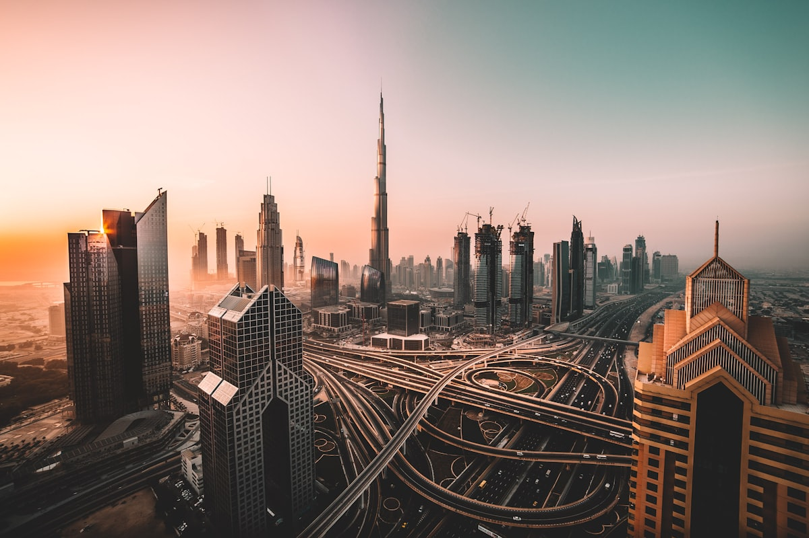
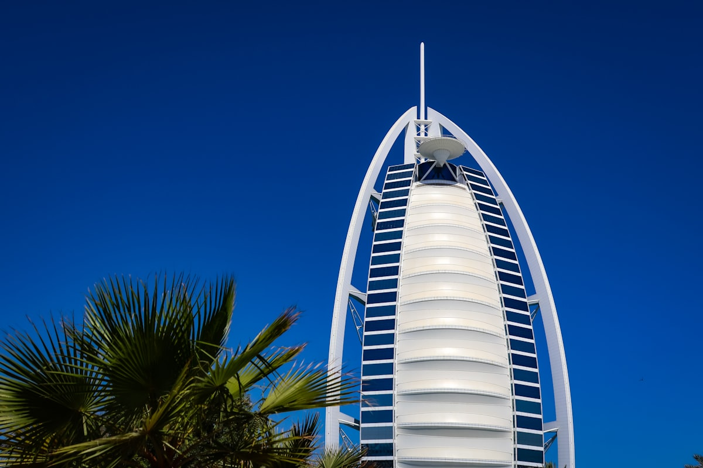
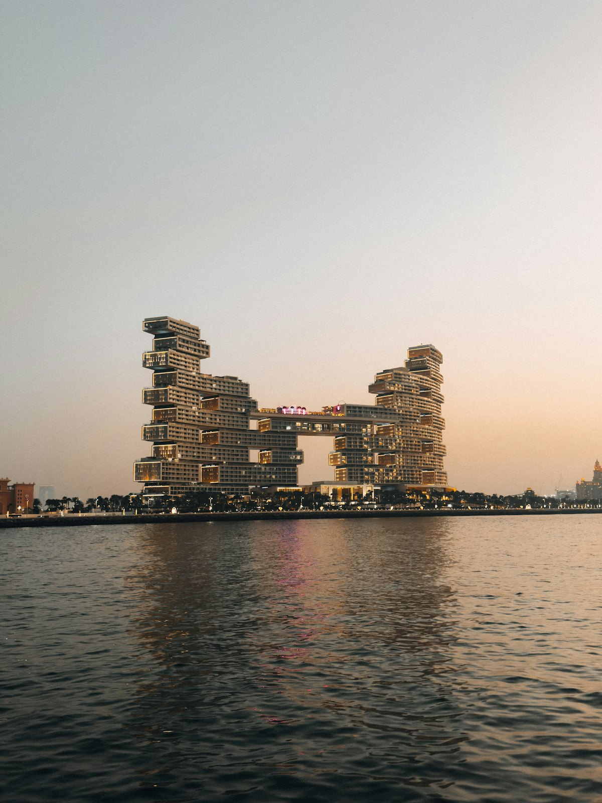
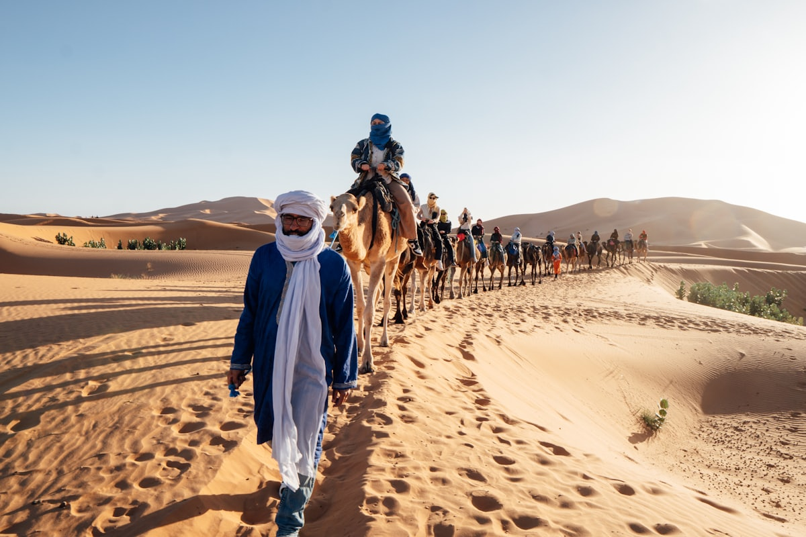
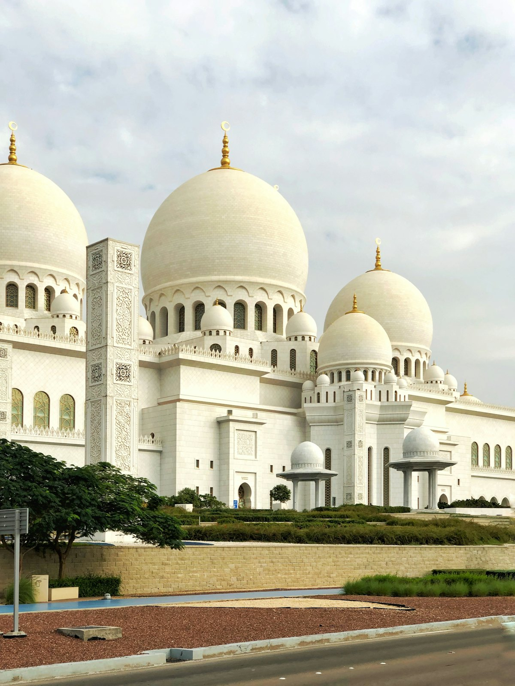
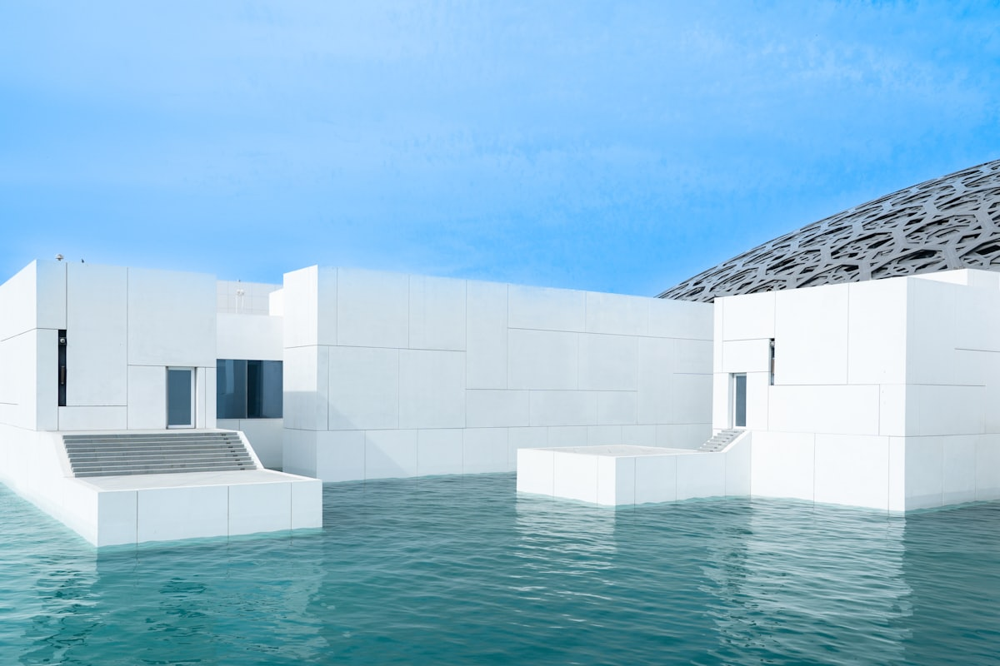
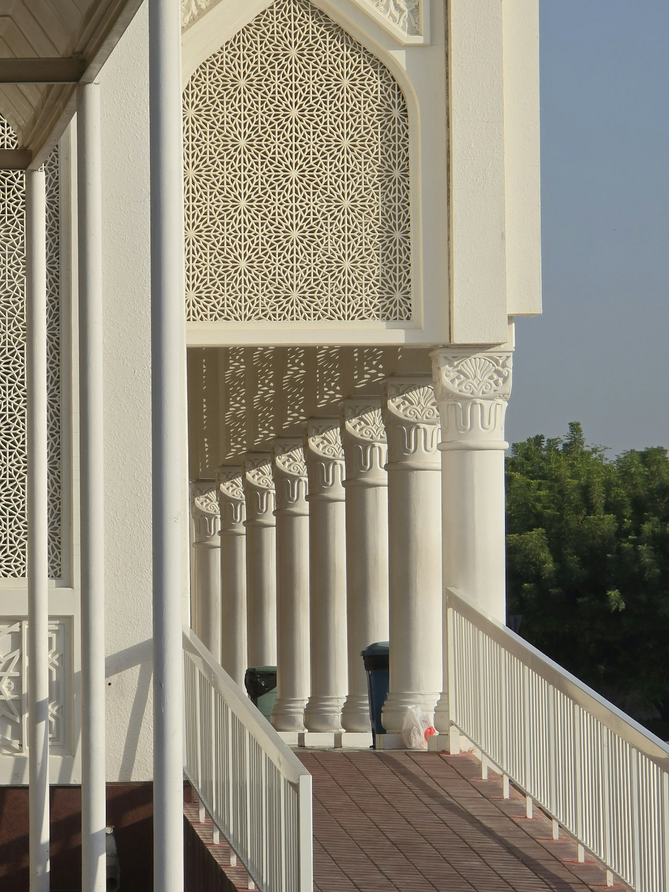
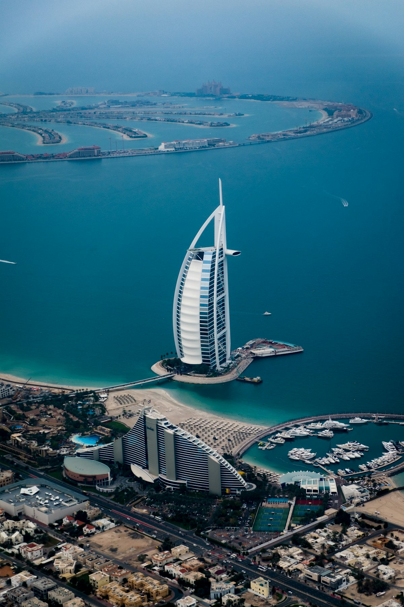

| 事项 | 结论 |
|---|---|
| 事项 | 结论 |
| 签证（最省心） | 中国护照免签 30 天（2025 年 4 月起调整为 180 天内累计 90 天），无需任何材料，护照有效期 6 个月以上即可 |
| 推荐方案 | 迪拜 5 天（市区地标+海岸+沙漠）+ 阿布扎比 3 天（文化+乐园）+ 沙迦 1 天购物返程 |
| 最佳季节 | 11 月–次年 3 月（白天 20–30℃ 舒适）；6–9 月极热（40℃+）且奇迹花园闭园 |
| 行程链 | 北京 → 迪拜 → 阿布扎比 → 沙迦 → 迪拜 → 返程 |
| 预算（人均） | 经济 10000–15000 ／ 标准 18000–26000 ／ 舒适 45000–65000（人民币） |
| 三件提前事 | ① 订往返机票（提前 45 天，淡季往返 3500–4500 元）② 订哈利法塔/法拉利世界门票 ③ 预订沙漠冲沙与酒店 |
| 时差与电源 | 时差 -4 小时；电压 230V，G 型英标三脚插座，必须带转换头 |
| 货币与支付 | 1 迪拉姆 ≈ 1.95 元人民币；信用卡/Apple Pay 几乎通用，换少量现金备用即可 |
以下为 9 天 8 晚的推荐节奏：迪拜 5 天（先市区地标、再海岸与沙漠），第 6 天转场阿布扎比 3 天，最后 1 天沙迦购物返程。每日主景点 ≤2 个，城际交通以自驾/包车为主。
| 日期 | 行程 | 过夜地 | 主题 |
|---|---|---|---|
| D1 抵迪拜 | 北京✈迪拜（约 8.5h），入境免签+虹膜扫描，入住市中心/码头，傍晚朱美拉海滩看帆船日落 | 迪拜 | 抵达+预热 |
| D2 | 哈利法塔 At The Top → 迪拜购物中心 Dubai Mall → 迪拜喷泉夜景 | 迪拜 | 都市地标 |
| D3 | 帆船酒店外观+朱美拉海滩 → 棕榈岛轻轨 → 亚特兰蒂斯水世界/失落的空间 | 迪拜 | 海岸与豪奢 |
| D4 | 阿法迪老城 → 黄金市场+香料市场 → 阿布拉木船渡湾 → 奇迹花园（冬季） | 迪拜 | 老城烟火 |
| D5 | 沙漠冲沙：冲沙+骑骆驼+滑沙+BBQ 晚餐与表演（约 6 小时） | 迪拜 | 沙漠日 |
| D6 | 迪拜→阿布扎比：谢赫扎耶德大清真寺（傍晚最美）→ 滨海大道散步 | 阿布扎比 | 转场+清真寺 |
| D7 | 卢浮宫阿布扎比 → 萨迪亚特岛 → 亚斯岛（法拉利世界外观/码头） | 阿布扎比 | 文化日 |
| D8 | 法拉利世界全天（Formula Rossa）或 亚斯水世界 → 酋长国宫殿外观 | 阿布扎比 | 乐园日 |
| D9 返程 | 阿布扎比→沙迦（蓝市场/黄金市场购物）→ 迪拜机场免税店 → 迪拜✈北京 | 沙迦/迪拜 | 购物+收尾 |
以下为 9 天全程的逐小时执行时间线，可当作「当天打开照着走」的清单。标注 ※ 的可选项视体力与天气取舍。
| 时间 | 事项 |
|---|---|
| 00:40–05:30 | 北京✈迪拜（阿联酋航空 EK307 直飞约 8.5h，凌晨起飞、当地时间清晨到达） |
| 06:30–09:00 | 入境：免签刷护照+虹膜扫描（IRIS），取行李后打车/Careem 到市中心酒店 |
| 10:00–13:00 | 入住补觉，下午醒来适应时差（北京比迪拜快 4 小时） |
| 16:00–19:00 | 朱美拉海滩（免费）：白沙+帆船酒店日落剪影，迪拜第一张照片 |
| 19:30–21:00 | 市中心/码头晚餐，夜晚城市灯光初体验 |
| 时间 | 事项 |
|---|---|
| 09:00–10:30 | 迪拜购物中心 Dubai Mall（免费）：全球最大商场，先逛水族馆外墙与瀑布装置 |
| 10:30–12:30 | 哈利法塔 At The Top（124/125 层）：非高峰时段线上约 AED 169–199，提前官网订 |
| 12:30–14:00 | Dubai Mall 内午餐：美食广场全球 150+ 国家菜 |
| 14:00–17:30 | 逛街/溜冰场/VR 公园；可加购迪拜水族馆（联票约 AED 329） |
| 18:30–20:30 | 迪拜喷泉 Dubai Fountain（免费）：每 30 分钟一场，晚 6 点后最佳，喷泉+哈利法塔灯光秀 |
| 时间 | 事项 |
|---|---|
| 09:00–11:00 | 朱美拉海滩/帆船酒店（外观免费）：对岸 Jumeirah Beach 是最佳拍照点 |
| 11:30–13:00 | 棕榈岛轻轨 Monorail（往返约 AED 30）：进岛沿途俯瞰棕榈叶与海滨别墅 |
| 13:00–15:30 | 亚特兰蒂斯：失落的空间水族馆（The Lost Chambers）或水世界冒险乐园（成人约 AED 320–350） |
| 15:30–17:00 | 棕榈岛观景台 The View（52 层，约 AED 100+）俯瞰全岛与天际线 |
| 18:00–20:00 | 迪拜码头 Marina 晚餐，游艇与高楼夜景 |
| 时间 | 事项 |
|---|---|
| 09:00–11:30 | 阿法迪历史街区 Al Fahidi（免费）：风塔老宅、迪拜博物馆（约 AED 3，超便宜） |
| 11:30–13:00 | 黄金市场 Gold Souk + 香料市场（免费）：黄金按克计价，砍价空间大 |
| 13:00–13:30 | 阿布拉木船 Abra（约 AED 1）：横渡迪拜湾，最便宜的地道体验 |
| 15:00–18:00 | 奇迹花园（冬季开放，成人约 AED 105）：1.5 亿朵鲜花拼成的巨型花海 |
| 19:00 | 晚餐：老城区阿拉伯菜/波斯烤肉 |
| 时间 | 事项 |
|---|---|
| 15:00–16:00 | 酒店接送（拼团含接送），前往拉巴卜红沙区 |
| 16:30–18:30 | 沙漠冲沙 dune bashing（约 45 分钟）：越野车翻越沙丘，肾上腺素项目 |
| 18:30–19:30 | 骑骆驼+滑沙+沙漠营地（含阿拉伯服装拍照，免费项目） |
| 19:30–21:00 | BBQ 晚餐 + 肚皮舞/火舞表演 |
| 21:30 | 送回酒店（拼团约 AED 120–250/人，私享越野车约 AED 650+/车） |
| 时间 | 事项 |
|---|---|
| 08:30–10:00 | 迪拜→阿布扎比（自驾 E11 高速约 1.5h / 包车） |
| 10:30–12:00 | 入住阿布扎比酒店（滨海/市中心区域） |
| 12:00–14:00 | 午餐+休息（中午热，室内躲高温） |
| 16:00–19:00 | 谢赫扎耶德大清真寺（免费，需官网预约）：白色大理石+金箔穹顶，傍晚光线最美 |
| 19:30–21:00 | 滨海大道 Corniche（免费）散步，或阿联酋传统晚餐 |
| 时间 | 事项 |
|---|---|
| 09:30–12:30 | 卢浮宫阿布扎比（成人 AED 70，18 岁以下免费）：光之穹顶下穿越文明史 |
| 12:30–14:00 | 萨迪亚特岛午餐 |
| 14:30–17:30 | 亚斯岛 Yas Island：法拉利世界外观/亚斯码头/华纳兄弟世界（选一） |
| 18:00–20:00 | 亚斯码头夜景/晚餐：看 F1 赛道与法拉利世界红色屋顶 |
| 时间 | 事项 |
|---|---|
| 09:30–15:30 | 法拉利世界全天（成人线上约 AED 295–345）：Formula Rossa 世界最快过山车 240km/h + 40+ 项目 |
| 15:30–17:00 | 或改选亚斯水世界（夏季更舒服） |
| 17:30–19:00 | 酋长国宫殿酒店外观（八星级）与阿布扎比天际线拍照 |
| 19:30 | 晚餐：阿布扎比滨海餐厅/烤羊肉 |
| 时间 | 事项 |
|---|---|
| 08:30–09:30 | 阿布扎比→沙迦（约 1.5h），先看沙迦蓝市场/黄金市场 |
| 09:30–11:30 | 沙迦老城+艺术区（免费）：比迪拜更市井的购物氛围 |
| 12:00–14:00 | 返迪拜机场路上午餐 |
| 14:30–16:00 | 迪拜机场免税店最后一站（香水/椰枣/藏红花） |
| 17:00–01:00 | 迪拜✈北京（直飞约 8.5h），次日清晨到家 |
必去（必去）/ 顺路（顺路）/ 可跳过（可跳过）。

必去
必去
必去
必去
必去
顺路
必去图片为 Unsplash 主题图（哈利法塔、帆船酒店、棕榈岛、沙漠冲沙、大清真寺、卢浮宫阿布扎比、迪拜老城、迪拜夜景等均为阿联酋实景），用于页面配图。更多免费景点：朱美拉海滩、滨海大道、阿法迪历史街区、阿布拉木船、亚斯码头。
点击左侧节点可在地图上定位；点击地图 marker 会高亮对应节点。坐标为 WGS-84 转 GCJ-02 纠偏后标注。
以下为单人、不含购物的估算，人民币计价；出发地基准北京。汇率按 1 迪拉姆 ≈ 1.95 元人民币估算。往返机票按淡季 4000–5500 元计。阿联酋酒店普遍收取旅游税（约 AED 15–20/晚），未计入下表。
| 项目 | 经济（10000–15000） | 标准（18000–26000） | 舒适（45000–65000） |
|---|---|---|---|
| 往返机票 | 北京⇄迪拜 3800–4500 | 灵活时段 5000–7000 | 商务/好时段直飞 12000–18000 |
| 住宿（8 晚） | 民宿/经济酒店 250–400/晚 | 四星酒店 700–1200/晚 | 五星/棕榈岛度假 2000–4000/晚 |
| 交通（城际） | 拼车+地铁 800–1200 | 城际包车/租车 1500–2500 | 全程包车+接送机 4000–6000 |
| 门票体验 | 清真寺+卢浮宫等 1000–1500 | 哈利法塔+冲沙+法拉利 3000–4000 | 全含+私享冲沙+快通 8000–12000 |
| 餐饮（9 天） | 快餐+美食街 1800–2500 | 正常餐厅 3500–5000 | Fine dining/棕榈岛 9000–15000 |
带娃推荐：棕榈岛亚特兰蒂斯水世界+失落的空间（可玩一天）、迪拜水族馆、亚斯水世界、法拉利世界按身高取舍；卢浮宫 18 岁以下免费很值得带。尽量避开 6–9 月出行——奇迹花园闭园且户外极热。3 岁以下多数景点免费。
旺季升级：哈利法塔 SKY 148 层（AED 399 起）+ 阿玛尼酒店下午茶；帆船酒店 Al Mahara 海底餐厅晚餐；沙漠私享营地过夜（AED 1200–2800/人）；阿布扎比加酋长国宫殿下午茶。11–3 月价格最高，务必提前 1–2 个月锁房。
| 方式 | 时长 | 参考价 | 备注 |
|---|---|---|---|
| 直飞（推荐） | 北京→迪拜约 8.5h | 往返 3500–4500 元（淡季） | 阿联酋航空 EK307/EK309、国航 CA941/CA945，迪拜国际机场 DXB |
| 转机 | 11–18h | 2800–4200 元 | 经多哈/曼谷/伊斯坦布尔，票价略低但费时 |
| 迪拜—阿布扎比 | 高速约 1.5h | 打车约 300–450 元/程 | E11 高速，包车或租车最方便 |
| 区域 | 价格/晚 | 优点 | 短板 |
|---|---|---|---|
| 迪拜·市中心/Dubai Mall | 标准 800–2000 / 舒适 2000+ | 哈利法塔、喷泉步行可达 | 旺季贵，停车贵 |
| 迪拜·码头 Marina/JBR | 标准 700–1500 | 海边+餐厅多，夜景美 | 离老城远 |
| 迪拜·老城 Deira/Bur | 经济 300–600 | 物价低、市井烟火、黄金市场旁 | 酒店偏旧 |
| 阿布扎比·市中心/滨海 | 标准 600–1500 | 大清真寺、滨海大道近 | 到亚斯岛需打车约 20 分钟 |
| 阿布扎比·亚斯岛 | 标准 900–2000 / 舒适 2000+ | 乐园酒店常送门票 | 度假区餐饮选择少 |
| 棕榈岛·亚特兰蒂斯 | 舒适 2500–5000 | 住客水世界+水族馆免费 | 价格高昂，需提前 1 个月订 |